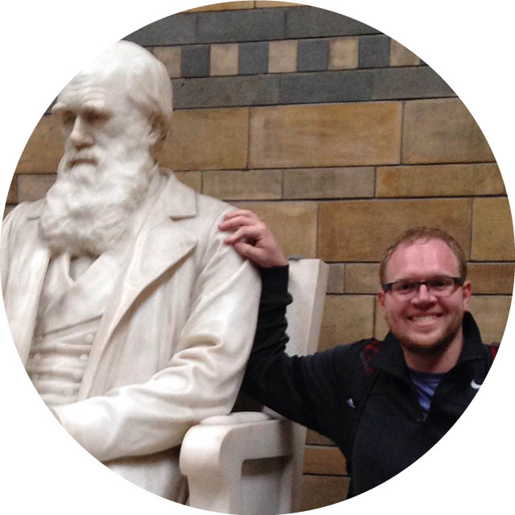

Home | Lab Publications | People | Research Interests | Join the Lab! | Contact Information
| The Lab Membership
Presently, the full-time members of the lab are--in
alphabetical order:
|
|
Boris
Igic, Associate Professor Boris is an avid fan of Chicago (a.k.a. the Miami of Canada) and its many faults; department table tennis ringer, on rare days when not injured; backgammon enthusiast. Founding member of the cycling team, Giro di Gyro. | |
|
 |
Karolis
Ramanauskas, Ph.D. Student Karolis is in his last year of graduate school, after a B.S. (also from UIC). He is working on uncovering RNase-based SI across eudicots. | |
|
|
Lucy Delaney, Ph.D. Student Lucy is in her second year of graduate school, arriving with a Master's degree from CUNY (Hunter College). | |
| People Formerly Known as Lab Members | ||
| Andy Raduski, Ph.D. (2019) After a B.A. from Indiana University, Dr. Raduski started his thesis work in the lab. He examined the relationship between the expression of SI and realized outcrossing rates, worked out the inheritance of self-fertility in Chilean wild tomato, as well as the group's systematics. His rock-throwing skills are formidable; alas, table tennis is not his strong suit. |
||
| Emma Goldberg, Postdoc
(2008-2011) Dr. Goldberg was an Associate Professor at University of Minnesota, and is now at Los Alamos National Laboratory. When she was in town, we probably had the best table tennis, dodgeball, and backgammon team in all of biology. |
 |
|
| Kelly
Robertson, M.S. (2012) Kelly's thesis work was primarily concerned with breeding system evolution in Solanaceae. She graduated from the renowned UIC Pharmacy program, and is a practicing pharmacist. Also, a former member of the Igic Lab cycling outfit, Giro di Gyro. |

| |
| Elizabeth Boyd, Former
Student Liz left in 2009, but not before she helped us finish an exciting project about the distribution of breeding systems in angiosperms. She is presently a Senior Research Officer at the Wyss Institute at Harvard University. |

| |